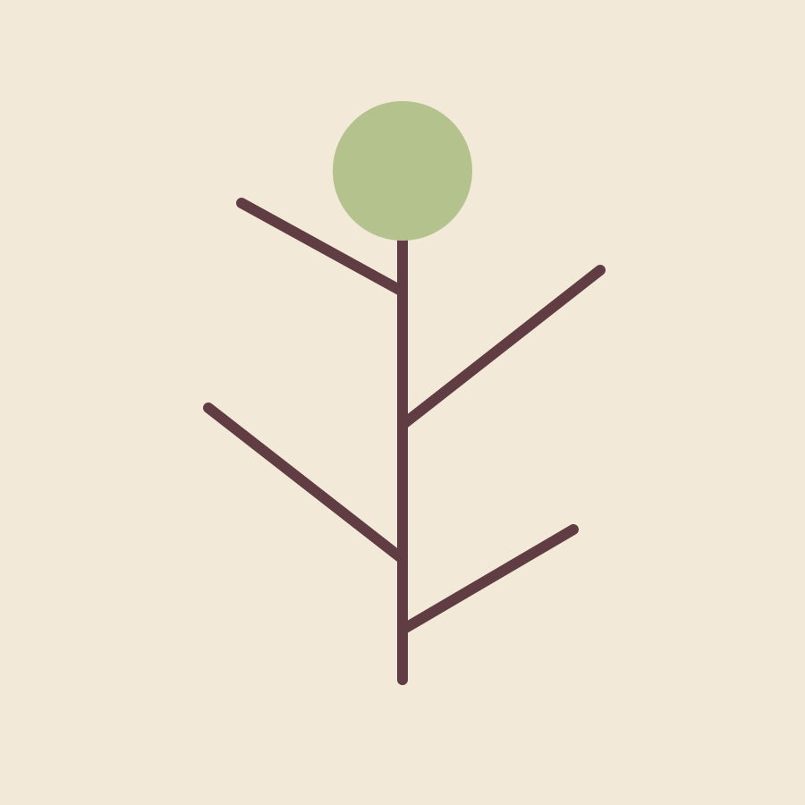
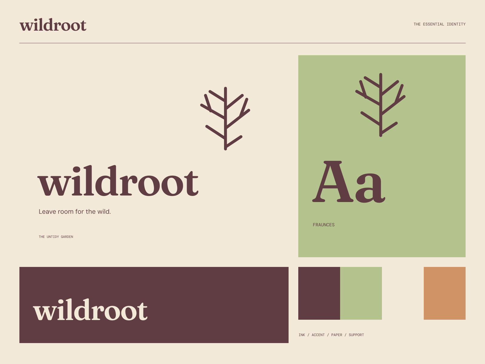

01
Work with what grows
A practical approach that begins with the ground beneath you.
TOOLS / GARDENS / GOOD GROUND
Leave room for the wild. Useful things for an untidy kind of beauty.

A coherent little world
Useful things for an untidy kind of beauty. Leave room for the wild.
01
A practical approach that begins with the ground beneath you.
02
Considered garden tools with a clear place in the everyday.
03
A little care, a little patience, and some space for the unexpected.

The point of view
Branching line studies, carved seedpod illustrations, soil-colored labels, and a softly rustic serif. The useful grid leaves room for a little natural wildness.